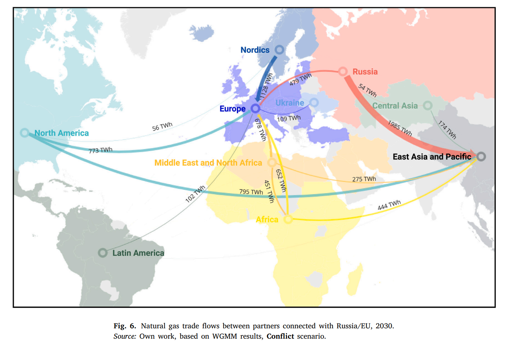
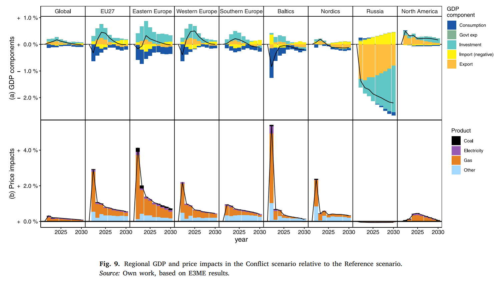

Energy security and Russian invasion of Ukraine
Following the Russian invasion of Ukraine the EU has faced critical questions about its energy security as its reliance on Russian gas (and oil) has caused concerns that any political move would trigger the so called "energy weapon" of Russia. We have used macroeconomic modelling combined with energy and trade modelling to investigate this question between 2022 and 2023.
The main outcome of this research is a paper titled The economic and energy security implications of the Russian energy weapon that we have published in the journal Energy. In the paper we argue that the "Russian energy weapon" was probably weaker than expected because of the already ongoing energy transition of the EU. We further have shown that on the long-term the current crisis might even trigger a stronger energy system transformation in the EU. We have connected the E3ME-FTT E3-type model and the WGMM gas model developed by REKK.
Papers / posts:
- The economic and energy security implications of the Russian energy weapon also as a working paper (but the main paper is open access too!)
- We wrote a local (Hungarian) article discussing the results in a non-scientific fashion, this way if you speak Hungarian
We have presented this research at the IAMC 2022 and at the CEMA 2023.
Figures!
We have used the WGMM model to predict gas flows, given changes due to the conflict:

and the E3ME-FTT model to figure out what this means in terms of prices and GDP for the various regions:
